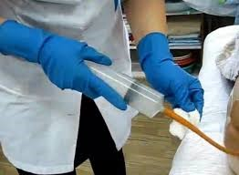

Оснащення: Грушоподібний балон або шприц Жане, газовивідна трубка, шпатель, вазелін, лікарський препарат (50-100 мл), підігрітий до 37-380 С, туалетний папір, рукавички, водонепроникний фартух, маска, клейонка, пелюшка, ширма, водонепроникний мішок.
Показання: необхідність введення ліків через пряму кишку
Протипоказання: підвищена чутливість до лікарського препарату16
|
Етапи |
Послідовність дій |
Обгрунтування |
|
Підготовчий етап |
1.Пояснити пацієнту сутність і хід майбутньої процедури та отримати згоду пацієнта на її проведення |
Підготовчий етап 1.Пояснити пацієнту сутність і хід майбутньої процедури та отримати згоду пацієнта на її проведення Заохочення пацієнта до співпраці. Дотримується право пацієнта на інформацію |
|
2. Якщо процедура проводиться в палаті, відгородити пацієнта ширмою |
Забезпечується інтимність виконання процедури |
|
|
3. За 1 год. до постановки лікувальної клізми зробити пацієнту очисну клізму Забезпечується очищення прямої кишки і можливість терапевтичної дії |
Забезпечується очищення прямої кишки і можливість терапевтичної дії |
|
|
4. Вимити і висушити руки. Надіти водонепроникний фартух, рукавички, маску. Набрати в грушоподібний балон 50-100 мл теплого лікарського препарату Забезпечується інфекційна безпека. Підігрітий лікарський препарат швидше взаємодіє зі слизовою оболонкою кишок. За Т розчину нижче ніж 37°С виникають позиви на дефекацію |
Забезпечується інфекційна безпека. Підігрітий лікарський препарат швидше взаємодіє зі слизовою оболонкою кишок. За Т розчину нижче ніж 37°С виникають позиви на дефекацію |
|
|
5. Постелити на ліжко клейонку, а на неї пелюшку. Попросити пацієнта лягти на лівий бік або допомогти йому. Якщо пацієнт не може самостійно повертатися на лівий бік. Ноги пацієнта повинні бути зігнуті в колінах і трохи приведені до живота Якщо неможливо укласти пацієнта на лівий бік, клізму ставити в положенні пацієнта лежачи на спині. |
У зв’язку з анатомічною особливістю розташування прямої та сигмоподібної кишок полегшується виконання процедури. Допустиме положення для даної процедури |
|
|
Основний етап |
1.Увести газовивідну трубку (див. протокол із застосування газовивідної трубки) |
Основний етап 1.Увести газовивідну трубку (див. протокол із застосування газовивідної трубки) Забезпечується введення лікарського засобу на достатню глибину |
|
2.Приєднати до трубки грушоподібний баллон/шприц Жане і повільно ввести лікарський препарат, набрати в нього трохи повітря, приєднати до трубки і проштовхнути залишки розчину в пряму кишку |
Запобігання неприємним відчуттям у пацієнта |
|
|
3.Не розтискаючи грушоподібного балона, від'єднати його від газовивідної трубки, витягти її і покласти разом із грушоподібним баллоном у лоток. |
Запобігання всмоктуванню препарату назад у 3.Не розтискаючи грушоподібного балона, від'єднати його від газовивідної трубки, витягти її і покласти разом із грушоподібним баллоном у лоток. Запобігання всмоктуванню препарату назад у балон. Забезпечується інфекц. безпека  |
|
|
Завершальний етап |
1.Витерти туалетним папером шкіру в ділянці відхідника в напрямку спереду назад (у жінок) |
Профілактика інфекції сечовивідних шляхів |
|
2. Зібрати клейонку і пелюшку, викинути їх у водонепроникний мішок. Зняти водонепроникний фартух, рукавички, маску; занурити їх в посудину із дезінфекційним розчином. |
Вимити і висушити руки |
|
|
3.Накрити пацієнта ковдрою, допомогти йому зайняти зручне положення, забрати ширму |
Забезпечується інфекційна безпека |
|
|
4.Зробити запис про виконання процедури і реакцію на неї пацієнта у відповідну медичну документацію |
Забезпечується документування процедури та послідовність |